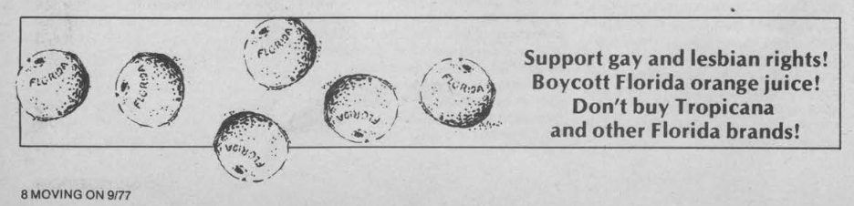

<div class="wrapper">
  <section>
    {% include_cached masthead.html %}
    <div align="left">
      
      <!--  -->
    </div>


      <div align="left">
        <h3 id="pubs">Research</h3>
      </div>
      <div align="left">
        <h4><i>"My God, they are trying to show <b>method</b> in their madness!"</i></h4>
      </div>
      <div align="right">
        <h4> - Sir Francis Bacon</h4>
      </div>
      <p>
        <ul class="dashed">
          <li>Book Review: Medical Doctors in Health Reforms: A Comparative Study of England and Canada.<i>Journal of Health Politics, Policy and Law.</i> <b><i> Forthcoming.</i></b></li>
          <li>Divine Intervention: Catholicism, Abortion, and the Concept of Healthcare in the United States and Canada.<b><i> Under Review.</i></b> 2024.</li>
          <li>Papers, Please: How the Political Economy Limits Queer Mobility Rights.<b><i> Working Paper.</i></b> 2024.</li>
        </ul>

      <div align="left">
        <h3 id="maps">Maps</h3>
      </div>
      <p>
      I studied Political Science at New College of Florida and researched sociopolitical phenomena in the <a href = "https://ncfpbl.github.io" target="_blank" style="color:#7C0A02">Political Behavior Lab</a> during the 2021-2022 academic year. I illustrated my findings as maps using GIS tools in R. 
        <ul class="dashed">
          <li> A map of <a href = "maps/scs.html" target="_blank" style="color:#7C0A02">Sarasota County High Schools</a> overlaid with data detailing the racial composition of census tracts.</li>
          <li> A map of <a href = "maps/trees.html" target="_blank" style="color:#7C0A02">Trees in Sarasota County</a> indicating the year they were planted; their height and species.</li>  
          <li> A map of <a href = "maps/streets.html" target="_blank" style="color:#7C0A02">Roads in Sarasota County</a> by speed limit and suffix.</li>
          <li> A map of <a href = "maps/homesrq.html" target="_blank" style="color:#7C0A02">Homes in Sarasota County</a> by their assessed value; the year they were built, the last year that they were sold; and number of pools and bedrooms contained therein.</li>
          <li> A map of <a href = "https://github.com/aekothe/stlmaps/blob/main/barsnbreweries/placesilived.pdf" target="_blank" style="color:#7C0A02">the Places I Lived in St. Louis City</a> during the summer of 2020. It also contains the locations of bars and breweries to emphasize a rental that was above a bar and next door to the Anheuser-Busch Brewery.</li>
        </ul>
      </p>

      <hr>

      <p><small>
        This site's banner is an ad for a Floridian orange juice boycott that was implemented in response to Anita Bryant's campaign against housing and employment rights for LGBTQ Floridians. You can read more about the boycott <a href="https://www.myrecipes.com/extracrispy/the-orange-juice-boycott-that-changed-america" target="_blank" style="color:#7C0A02">here</a> and <a href = "https://www.nbcnews.com/nbc-out/out-news/1970s-christian-crusader-anita-bryant-helped-spawn-floridas-lgbtq-cult-rcna24215" target="_blank" style="color:#7C0A02">here</a>.
      </small></p>
      <p><small>
      <b>About this website:</b> This website is hosted on <a href = "https://pages.github.com" target="_blank" style="color:#7C0A02">Github Pages</a> and draws from <a href="http://www.shirokuriwaki.com/" target="_blank" style="color:#7C0A02"> Shiro Kuriwaki</a>.
      </small></p>

  </section>
</div>
